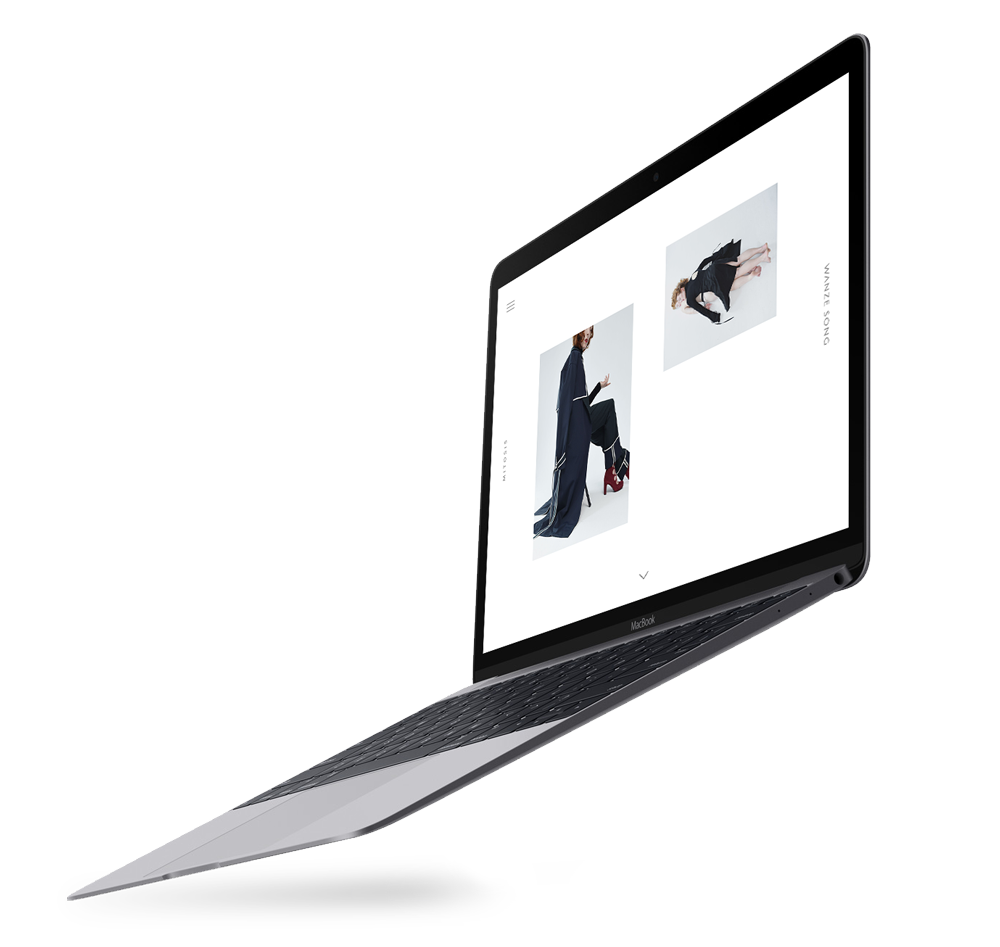
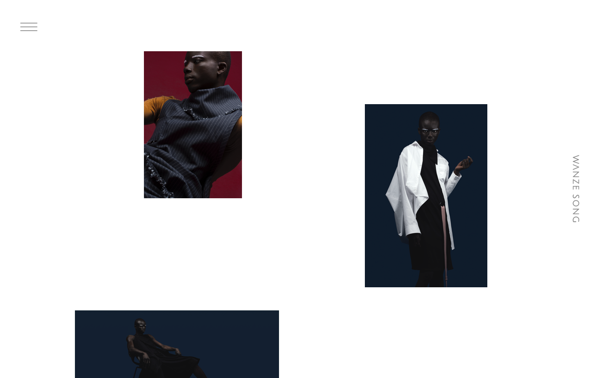
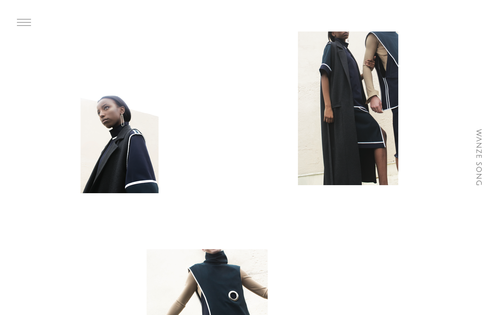
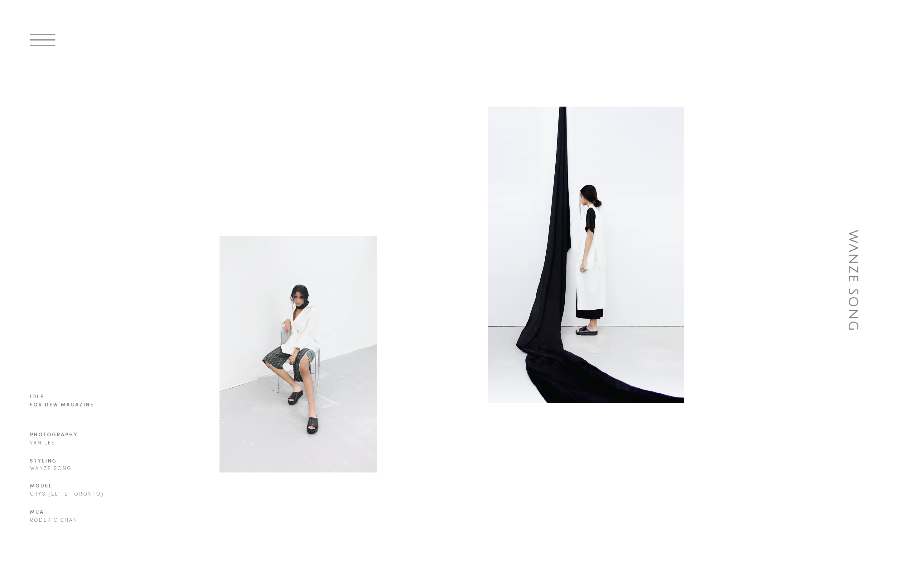

Wanze Song
Web Design & Development
Summer 2016
Portfolio website designed & built for Toronto-based fashion designer Wanze Song. The concept was to create a unique interactive experience that allowed the user to be in control of the website’s functionality.

The use of an unconventional scrolling technique acted as the basis for the stylization of the site. The idea behind this was to inflict a sort of dream-like state where the photos float along the page.


